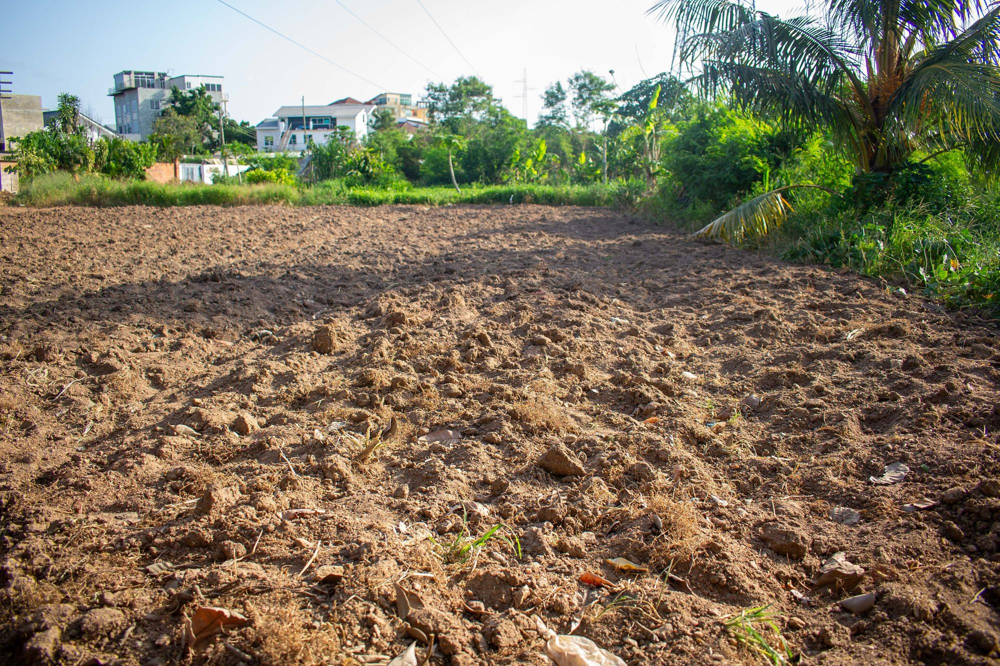
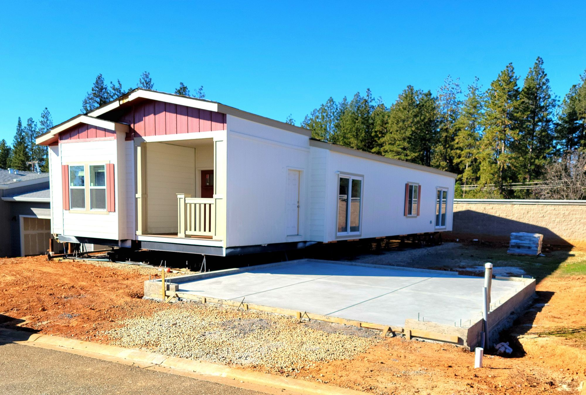
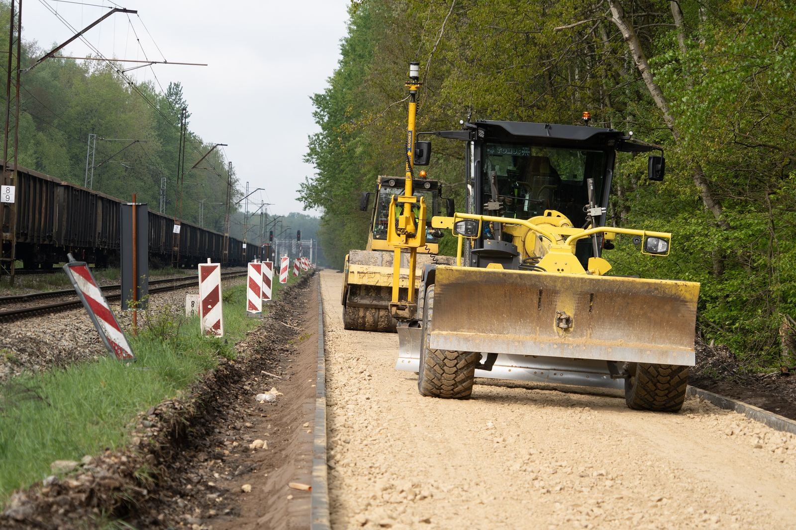
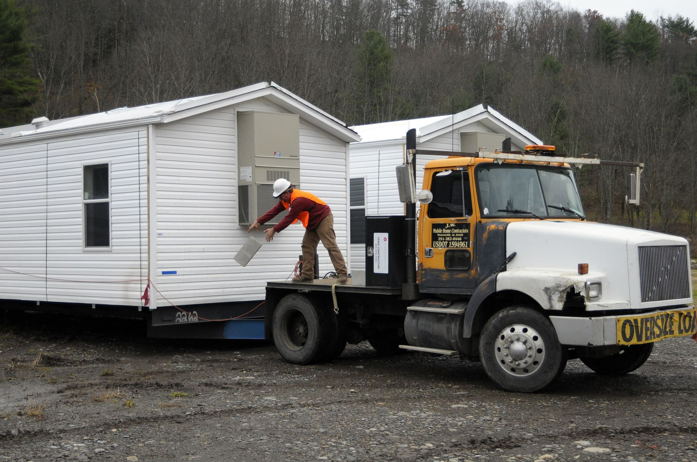
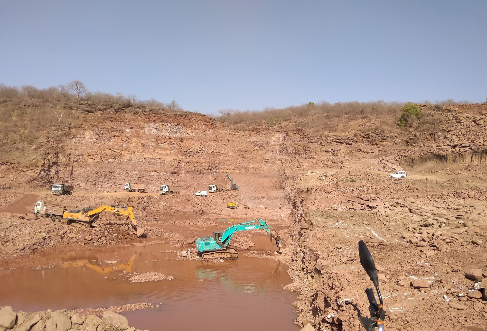
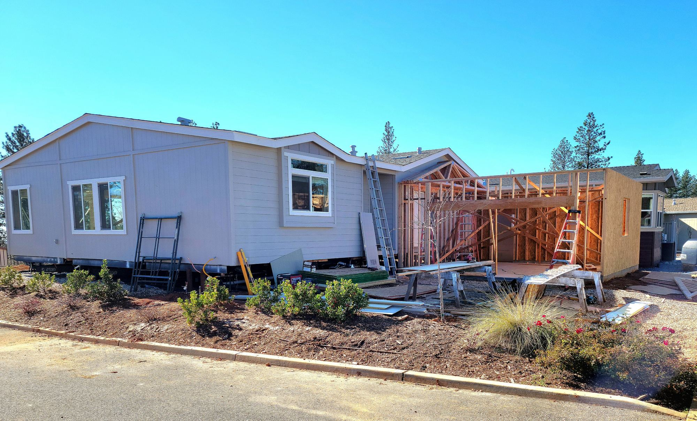
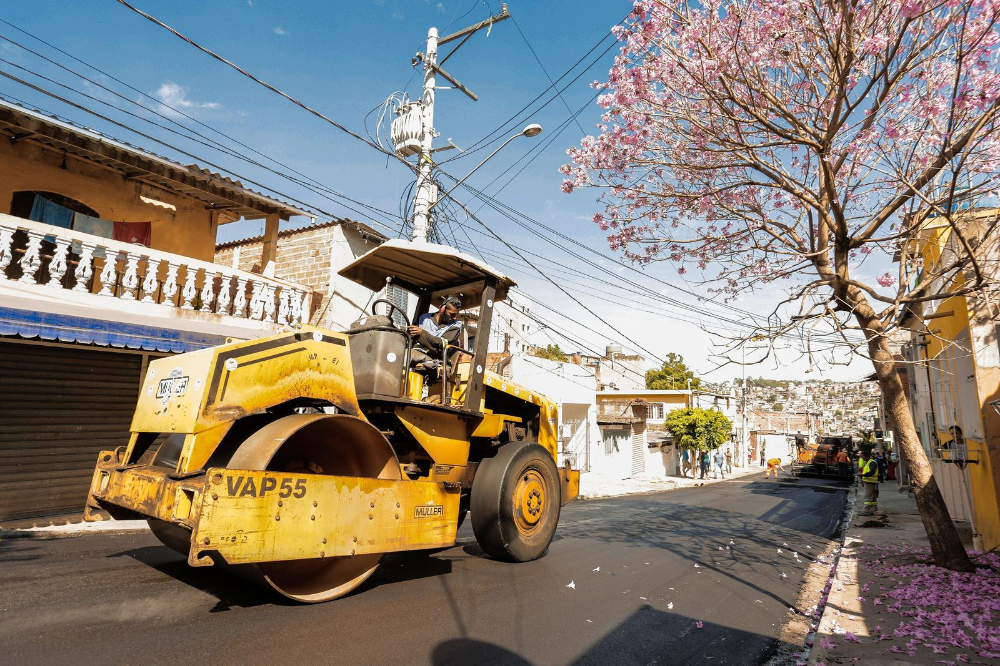
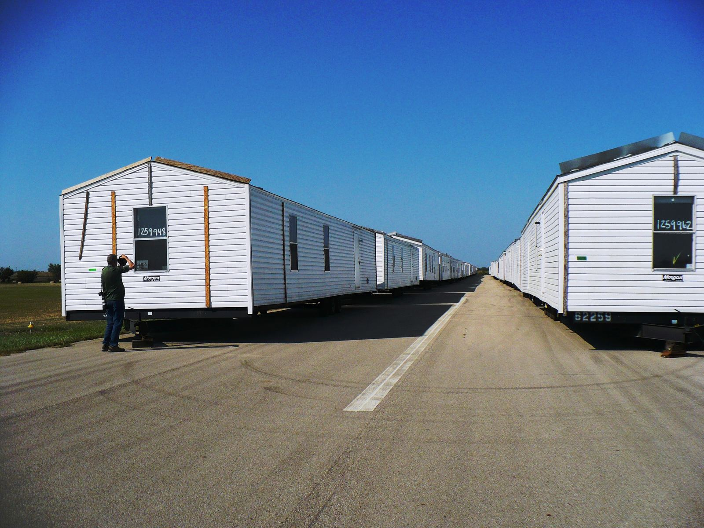

Dirt work and site prep
Clearing, cut and fill, then an engineered pad compacted and tested to the detail your county signs off on.
- Lot clearing and grubbing
- Rough and finish grade
- Compaction testing
- Driveway approach and culvert
One Arizona crew from a raw lot to the day you get keys. We grade it, we plumb it, we power it, and we set the home.

Hiring a grader, a plumber, an electrician and a set crew separately is where schedules fall apart.

Clearing, cut and fill, then an engineered pad compacted and tested to the detail your county signs off on.

Water, sewer or septic, power and gas. Trenched, laid, pressure tested and inspected before the home shows up.

Placed, blocked, leveled, anchored and closed up. Singlewide, doublewide or triple, piers or permanent.
A manufactured home arrives on a steel frame, moves with the ground, and is inspected against HUD rules, not framing rules.
Soft fill under a pier shows up as a stuck door eighteen months later. Compaction gets tested, and the result goes in the file with the plan.
Spacing comes off the manufacturer's setup manual and the wind zone for your county. An inspector will check both.
Trench open, pressure held, inspector on site. Covering a line before it is signed is the most expensive shortcut on the job.
Soil, slope, setbacks, and where the utilities actually stub out. Free, and usually about an hour.
Engineered pad detail drawn and stamped, county submittal filed, inspection dates on the calendar.
Clear, cut, fill, compact, test. Driveway and drainage go in while the machines are already on site.
Trench, lay, pressure test, inspect, backfill. Nothing gets covered before it is signed off.
Home placed, blocked, leveled, anchored, marriage line closed, then skirting and final grade.

Cut, fill, compact, test. Get that part wrong and it shows up two years later as a door that will not close.



Pad was tested and passed the first time. Home landed on a Tuesday and we were level by Thursday.
We send them every buyer who needs site work. They call the inspector themselves, which saves my team the chasing.
Second home they have set for us. Same crew both times, same quote, no change orders halfway through.
West Valley is home base. We run out to the rural lots most crews will not drive to, and the haul is priced up front.
We do. Pad detail goes to the county with the application, we handle corrections, and we call in every inspection. You get the approved card at the end. If you would rather pull them yourself we will hand you the drawings.
On a clean lot with utilities at the road, plan on two to three weeks of field work. Permit review is the variable. Rural lots needing a well, septic and a long power run stretch that out, and we tell you which one is the long pole before you sign.
Yes. Plenty of our jobs are pad only, with the dealer's crew doing the set. We coordinate dates so the pad is finished and tested before the transport shows up.
If a sewer main runs past your frontage you tie in, and that is almost always cheaper. Outside a district you are on septic, which means a percolation test and a county design first. We check both on the walk and price the one you actually need.
A pier set rests on blocks and footings and is tied down with anchors. A permanent foundation is engineered, poured, and the home is fixed to it. FHA, VA and most conventional lenders want the permanent version. Tell us the loan type on day one, because it changes the pad.
Regularly. Wickenburg, Congress, Aguila, Tonopah and down to Casa Grande and Coolidge are normal weeks for us. Anything past that we quote with the haul included so there is no surprise line item.
Parcel number or a cross street is enough to start. We tell you what the site needs before we ever quote it.